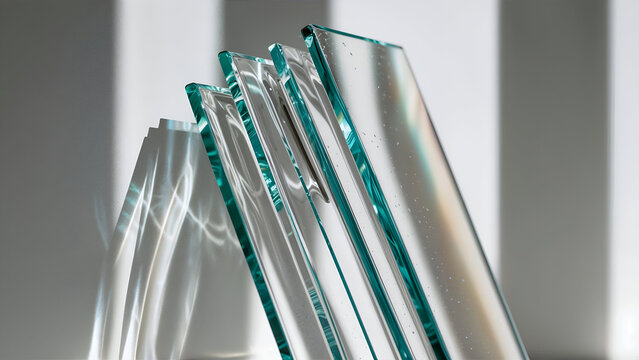
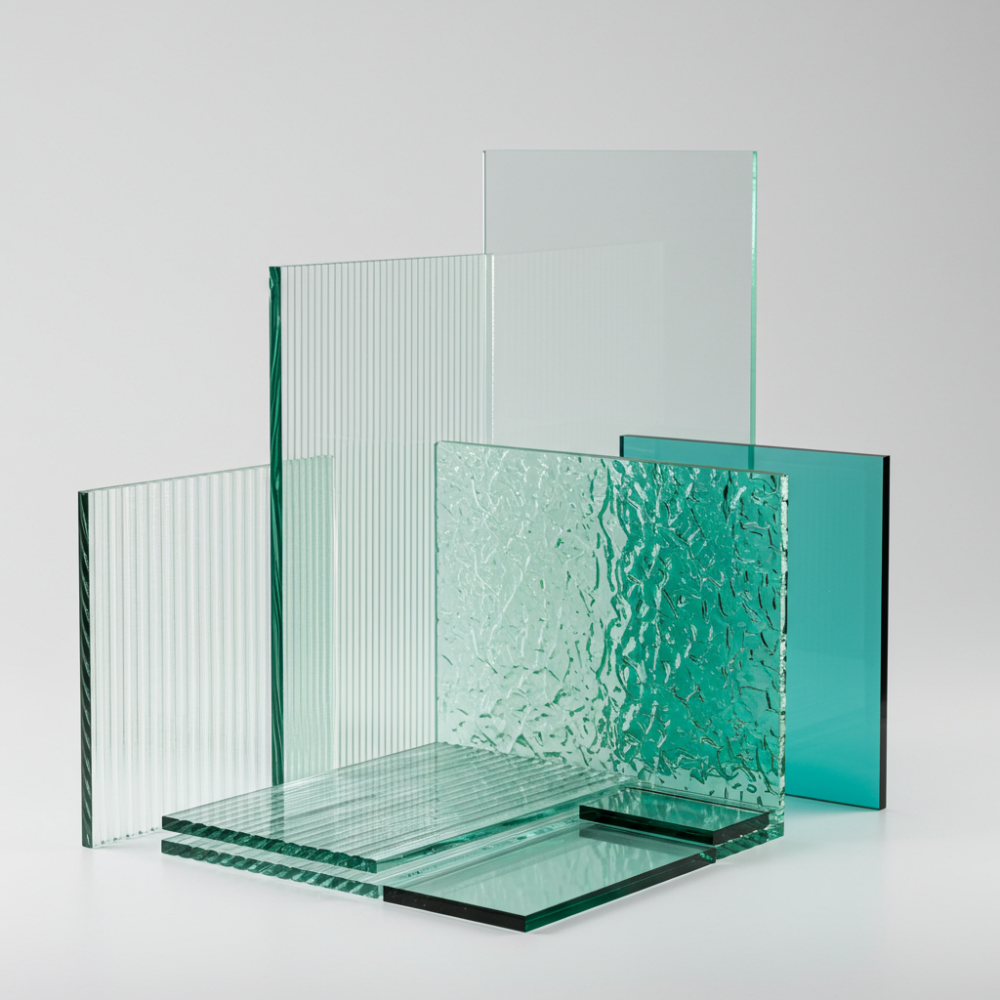

Закалённое стекло
Термически закалённое флоат-стекло. Прочность в 4–5 раз выше обычного, при разрушении — неострые фрагменты. Основа для душевых, столешниц, ограждений.

Термоупрочнённое стекло
Промежуточная закалка: прочнее обычного стекла, но при разрушении держит форму в проёме, не рассыпаясь. Используется в фасадных системах.

Осветлённое стекло
Стекло с пониженным содержанием оксида железа — торец почти не даёт зелёного оттенка. Для витрин и остекления, где важна цветопередача.

Оптивайт (Optiwhite)
Премиальное сверхпрозрачное стекло с минимальным содержанием железа — практически без цветового искажения. Мебельные фасады, витражи, дисплеи.
 стекло.jpg)
Серое (тонированное)
Тонировка в массе стекла снижает светопропускание и блики. Хорошо смотрится в офисных перегородках и фасадном остеклении.

Кристалл
Флоат-стекло высшего сорта без визуальных дефектов, максимально прозрачное. Межкомнатные двери, душевые перегородки, витражи.